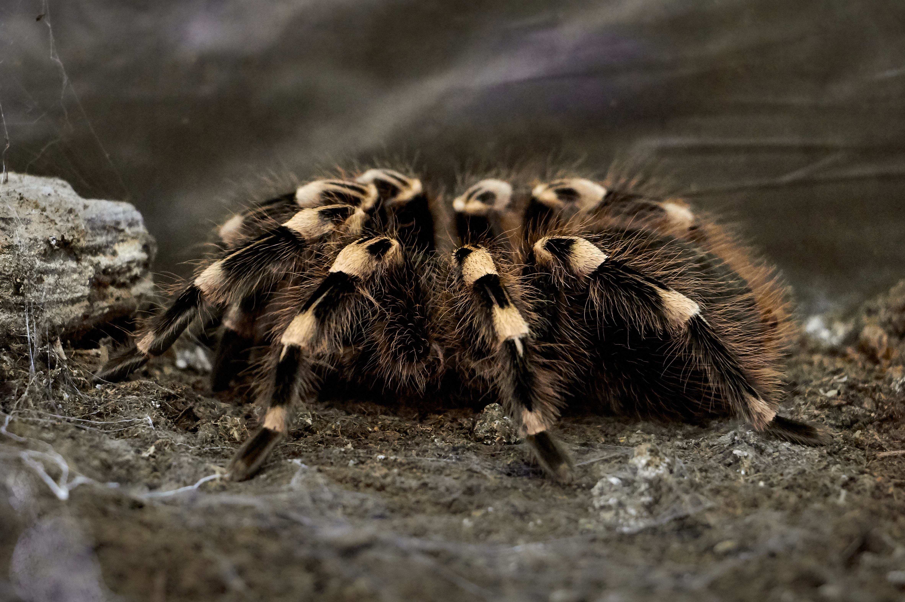

타란튤라
타란튤라(Tarantula)는 열대/아열대지방에 사는 원실젖거미아목 짐승빛거미과(Theraphosidae)[2]에 속하는 거미의 총칭이다.
다 자라면 경간이 15~25cm에 달한다. 최대 종은 경간이 30cm라는 듯. 종류가 매우 다양하며 그만큼 다양한 습성을 가지고 있다.
국내에서는 킹 바분과 골리앗 버드이터가 충왕전을 통해 유명해지기도 했다.
더 알고싶다면 클릭
나무위키
타란튤라중 ~~속
Grammostola
Avicularia
Poecilotheriae
